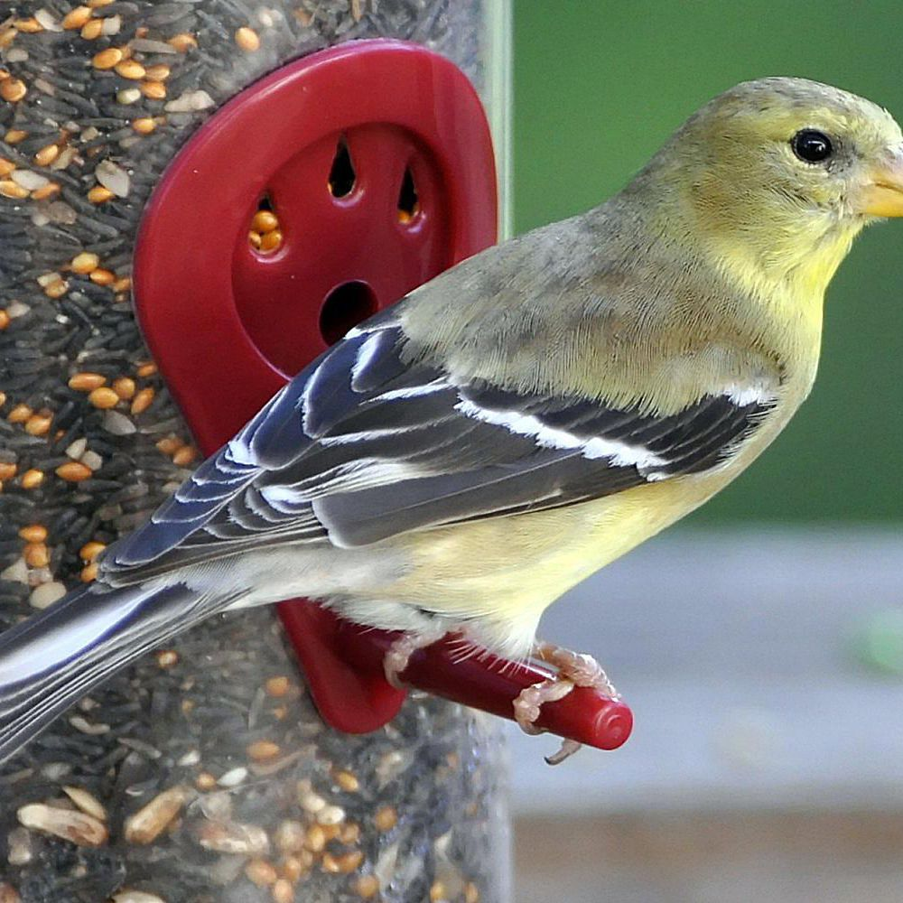
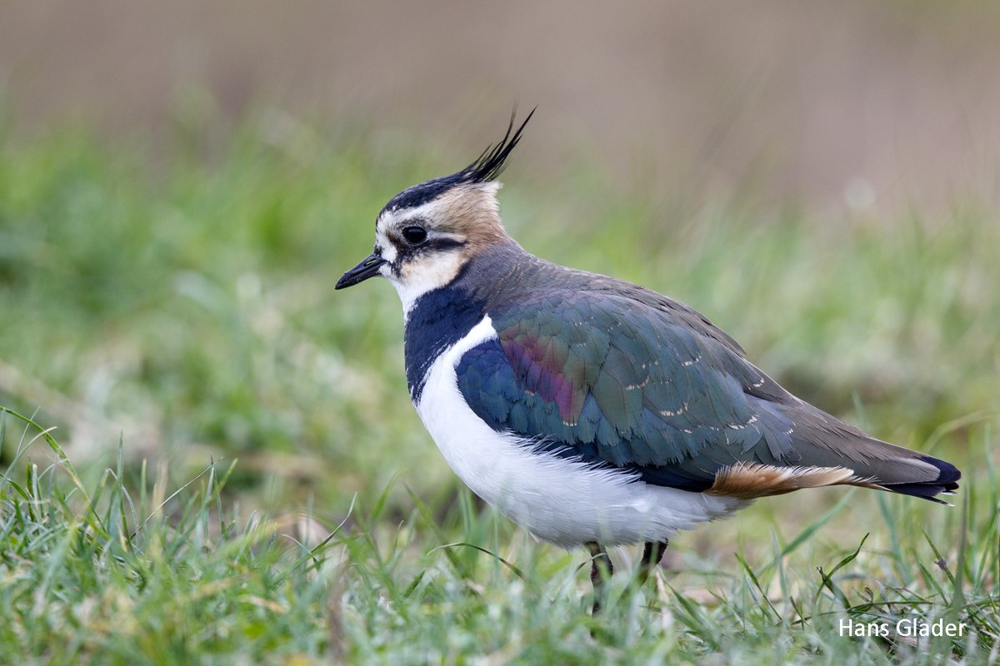

Granivory is a type of plant-animal interaction in which granivores (seed predators) feed on the seeds of plants as a main or exclusive food source, in many cases leaving the seeds damaged and not viable. Granivores are found across many families of vertebrates (especially mammals and birds) as well as invertebrates (mainly insects) thus, seed predation occurs in virtually all terrestrial ecosystems. Seed predation is commonly divided into two distinctive temporal categories, pre-dispersal and post-dispersal predation, which affect the fitness of the parental plant and the dispersed offspring (the seed), respectively. Mitigating pre- and post-dispersal predation may involve different strategies. To counter seed predation, plants have evolved both physical defenses.
 